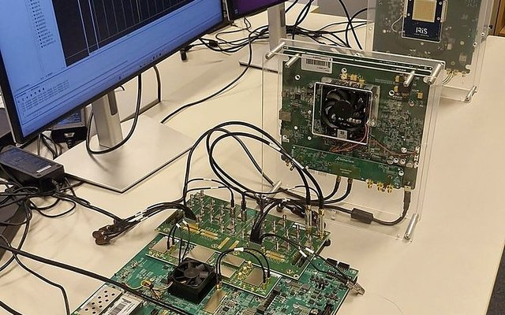

Real-Time FPGA OFDM PHY
A mode-selectable OFDM transceiver written in synthesizable Verilog for the AMD ZCU216 RFSoC — verified bit-exact against a C/NumPy reference model and proven on real silicon.
1Engineering Challenge
A wideband OFDM PHY — the same family of waveform used by Wi-Fi, LTE, and 5G — has to run frame synchronization, carrier-offset correction, FFT-based demodulation, channel estimation, and equalization at full radio sample rate, with essentially zero error tolerance. Proving that a design works is not enough in simulation only: the real test is whether the same RTL, synthesized and routed for a specific part, produces bit-exact results when it is actually clocked on silicon. This project's goal was to build and close that full loop — from a clean mathematical reference down to a working transceiver on an RFSoC board.
2System Architecture
ofdm_transceiver_top is a single Verilog design that is runtime mode-selectable:
transmitter, receiver, or digital loopback (TX feeding RX internally), with a second select line
choosing the modulation order. Both chains share a 256-point FFT engine, the QAM constellation logic,
and the framing structure. Control and status (mode, modulation, start, on-chip BER readback) are
exposed over AXI-Lite/GPIO; the IQ datapath is carried over AXI-Stream.
Block diagram reconstructed from the project's own architecture documentation (README and block-design docs in the repository).
3My Contribution
This is an individually built research/portfolio project (solo repository, not a team deliverable): the RTL for both TX and RX chains, the C and NumPy golden-reference models used to validate it, the simulation and regression infrastructure, the Vivado block design (RFDC + DMA integration), the Vitis firmware used for board bring-up, and the silicon debugging were all carried out directly by me.
4Implementation
- RTL: synthesizable Verilog, 256-point FFT/IFFT via the Xilinx xfft 9.1 IP, fixed-point QAM mapping/slicing (QPSK, 16/64/256-QAM).
- Synchronization: frame/timing detection plus integer and fractional carrier-frequency offset (CFO) correction using a Meyr-style estimator.
- Channel estimation / equalization: pilot-based least-squares channel estimation feeding a zero-forcing equalizer.
- Platform: AMD ZCU216 RFSoC evaluation board, locked target part
xczu9eg-ffvb1156-2-e; Vivado 2021.1 for synthesis/simulation, Vitis 2022.2 for firmware. - Integration: AXI-Stream IQ datapath, AXI-Lite/GPIO control plane, RFDC + DMA in the Vivado block design.
5Verification
Every block is proven against a reference before it is trusted on hardware. The chain of evidence runs from a C reference model, to a bit-exact NumPy golden model, to RTL simulation against the real Xilinx FFT IP on the locked target part, and only then to silicon:
On top of this chain, a required-gate regression suite (run_rtl_regression.py) tracks a
registry of simulation gates — 12 of 12 passing at the time this page was written — covering the
3-mode transceiver, 4-modulation clean loopback, and multi-frame streaming scenarios.
6Measured Results
All figures below are taken directly from the project's own simulation logs, timing/utilization reports, and silicon test results.
Honest status, not overstated: silicon-validated BER = 0 currently covers the 16-QAM full-chain RX and the 3-mode transceiver. The 4-modulation result (QPSK/16/64/256-QAM) is verified clean-loopback in simulation; silicon validation across all four modulations and a diverse channel/CFO BER-vs-SNR sweep are in progress. Sustained wideband throughput against the project's 200 Msps target is also still in progress and is not yet a closed result — it is tracked separately from the BER and timing-closure figures above.
7Engineering Challenges
- Full-rate timing closure. The channel-estimation complex-divide was reworked into a precomputed-constant multiply to close timing at the full 187.5 MHz sample rate.
- RF loopback debug. An RF DAC→ADC analog loopback test uncovered a DAC C2R (complex-to-real) mixer bug; it was root-caused and fixed on silicon. The remaining residual error was isolated to a degraded SMA test cable through physical substitution testing — a design-external cause, not a logic bug.
- Keeping simulation honest. A "real-IP rule" was enforced throughout: a simulation gate only counts as PASS when it runs against the actual Xilinx xfft 9.1 IP on the locked target part — stub/behavioral runs are treated as sanity checks only, not evidence.
8Repository & Evidence

Hardware bring-up: ZCU216 RFSoC evaluation board with RF front-end module.